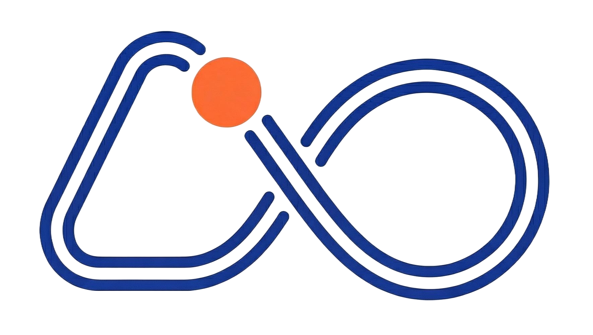
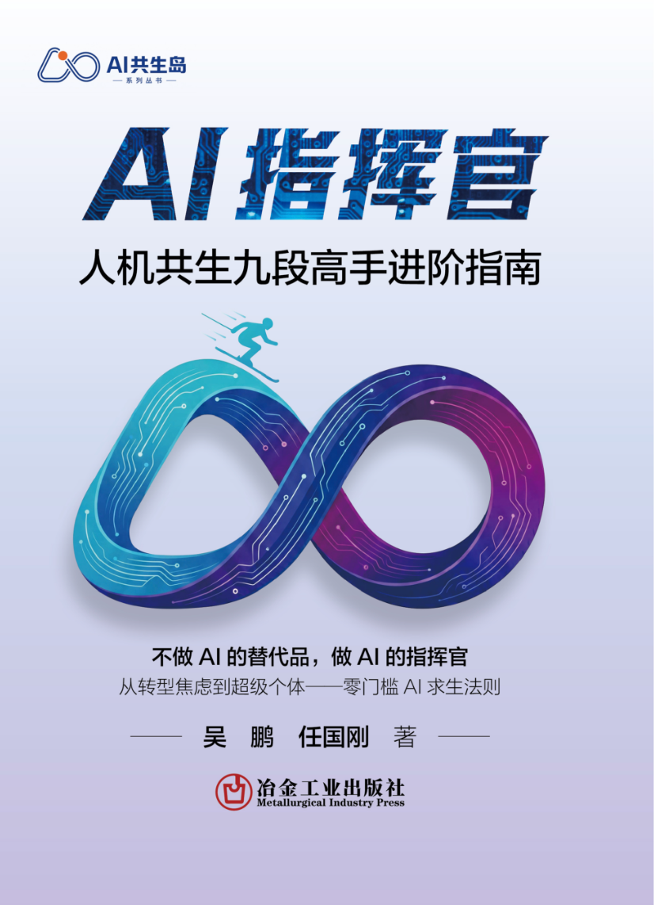

AI共生岛开源丛书 · 第一册
如何成为FDE？从九段能力出发，沿企业AI落地罗盘进入真实业务现场，把AI变成可验证、可交付、可复制的结果。

从提示词高手到AI指挥官，建立表达、工具、知识、智能体、编程、系统、AI员工、领学和决策九层能力。
从里往外、先纵后横，沿销售轴和产品轴定位业务，再检查战略、管理与关系条件。
从导论顺读九段，每章完成一个最小交付物。
先用罗盘定位节点，再回到九段补足交付能力。
检查外圈条件，从一个高价值业务点开始试点。